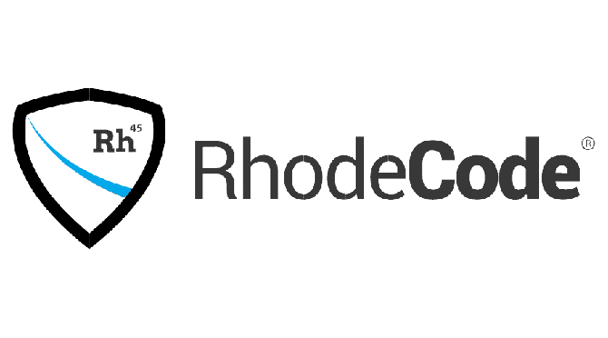

Concorrentes do GitHub
Possivelmente, o GitLab é o concorrente mais forte do GitHub. A principal vantagem do GitLab é o fato dele ser um software livre. Isso permite qualquer um possa criar um fork e reimplementar ele em seu próprio servidor. Por outro lado, sua interface e modo de funcionamento são bastante semelhantes aos do GitHub. Como diferencial, ele permite criar repositórios privados de graça, algo que é muito bem recebido pelos desenvolvedores que não estão interessados em expor seu código e não querem pagar por isso. O GitLab é a escolha número um para substituir o GitHub. É o mais próximo em termos de uso e fácil de migrar. Muitos projetos de código aberto já estão usando o GitLab incluindo 100 mil empresas e instituições como Bayer, NASA, Sony, Comcast e Nasdaq.
O BitBucket é da Atlassian, dona do Trello. Totalmente integrado a outras ferramentas de gerenciamento Jira, HipChat e Confluence. Escolha certa para grandes empresas que já usam essa plataforma. É gratuito para projetos com até cinco membros. Como pertence a Atlassian, o serviço é totalmente integrado com outros gerentes de projetos pertencentes à mesma empresa como Jira, Confluence e HipChat, o que o torna bastante atraente para empresas de desenvolvimento de software. De acordo com seus planos, ele é livre para equipes de até cinco membros, para que possa ser útil como ponto de partida e depois passar para planos de pagamento, uma vez que o projeto ou a empresa tenha aumentado de tamanho.
SourceForge é um dos maiores casos de “Phoenix” que foram vistos na história do software. Três anos atrás, boatos diziam que o serviço estava morrendo por causa da ganância excessiva de seus proprietários. Felizmente, uma nova direção devolveu esse serviço ao seu dvido lugar, para que ele voltasse a ser o que era. Obviamente, a publicidade não desapareceu totalmente, porque alguma coisa tem que manter a empresa por trás do serviço, mas pelo menos a sua política de não mais agressivo com os usuários é e isso é algo a ser bem-vindas. Atualmente, muitos projetos de código aberto relevantes dependem do SourceForce. Destaca-se o recente redesenho do site, que lhe conferiu um visual atraente e moderno.

Se sua organização usa tecnologias de controle de versão diferentes, o RhodeCode pode ser uma boa escolha. Ele suporta Mercurial, Git e Subversion, oferecendo a mais ampla variedade de opções nesta lista. Revisão de código, automação de fluxo de trabalho e gerenciamento de permissão ajudam a monitorar e executar o DevOps no seu grupo. E a migração integrada do SVN para o Git é uma grande ajuda ao fazer a transição de sua equipe. O Community Edition do RhodeCode é totalmente gratuito, enquanto o Enterprise Edition oferece integração com ferramentas corporativas, suporte premium, mais recursos de colaboração e várias instâncias. A Enterprise Edition custa US $ 75 por usuário por ano e as licenças são oferecidas em pacotes de 10 unidades.